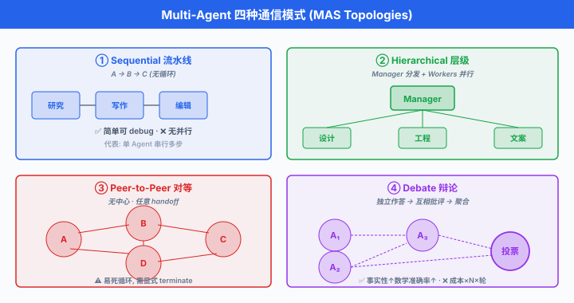

Multi-Agent 编排系统¶
一句话总结：当单个 Agent 塞不下所有工具、需要多角色协作、或想并行加速时，就该把系统拆成多个 Agent，用 AutoGen / LangGraph / CrewAI / MetaGPT 等框架把它们编排起来。
上一节讲了 MCP，让一个 Agent 能标准化地接一切工具。 但很快你会撞到另一堵墙：一个 Agent 什么都能干，意味着它什么都干不好 —— 系统提示塞满几十种角色指令，工具列表膨胀到 50+，上下文窗口全被描述占满，真正的对话被挤到边角。 更麻烦的是，有些任务本质上就是协作性的：产品经理写需求，架构师画图，工程师写代码，QA 测试 —— 你让一个 Agent 同时扮演四个角色，它会精神分裂。 于是多智能体系统 (Multi-Agent System, MAS) 登场：把工作拆给多个专业化 Agent，让它们之间通过消息或结构化 workflow 协作。 这一节讲清楚什么时候该上 MAS、几种主流通信模式、以及 2023-2026 年最有代表性的四个框架 (AutoGen, LangGraph, CrewAI, MetaGPT)，附带一份横向对比与实战陷阱清单.
何时需要 Multi-Agent¶
单 Agent 是好东西，能不上多 Agent 就不上。 但下列情形出现时，单 Agent 会撞墙:
- 上下文塞不下：一个 Agent 系统提示里塞 40 个工具、8 段 few-shot 示例、5 份文档，光工具描述就吃掉 15K Token. 后续对话预算被压得所剩无几。 拆成多个 Agent，每个只带自己领域的工具，描述量按需加载。
- 角色冲突：让同一个 Agent 既做"激进的创意生成者"又做"保守的事实核查者"，两种系统提示互相打架。 分离成两个 Agent，各写各的系统提示，结果反而更好。 Du 等 (2023) 的多智能体辩论工作直接观察到：让不同 Agent 独立生成再交叉批评，在事实性与数学推理任务上相比单 Agent 基线有显著提升。
- 并行加速: 5 篇论文要分别总结，单 Agent 串行读要 5 分钟。 起 5 个 worker Agent 并行，加上一个 aggregator 汇总，1 分钟完成。 这是纯 map-reduce，天然多 Agent.
- 复杂 workflow 拆分: "写一个 web app" 涉及需求分析 → 架构设计 → 代码实现 → 测试 → 文档，每一步的输入输出不同、评估标准不同。 把每一步做成一个 Agent, workflow 显式画出来，调试与替换单点都容易。
- 权限隔离：面向用户的 Agent 只能读，管理数据库的 Agent 才有写权限。 单 Agent 拿到 root 权限，一次 prompt injection 就翻盘；多 Agent 各持最小权限，攻击面小很多。
反过来，不要上 MAS 的信号:
- 任务能被一句 Chain-of-Thought (CoT) 提示解决 —— 别为了炫技上 5 个 Agent，单 Agent + CoT 更快更便宜。
- 各 Agent 之间需要来回传大量上下文 (每次 handoff 都要重复几 K Token 的背景)，通信开销超过分工收益。
- 系统只有一个用户、一次性对话，不需要长期分工。
通信模式¶
MAS 的编排结构决定了系统的性格。 四种最常见的模式:
Sequential (流水线)¶
- 结构：\(A \to B \to C\)，每个 Agent 处理前一个的输出。
- 例：研究员 Agent 收集资料 → 写作 Agent 起草 → 编辑 Agent 润色。
- 优点：极简，debug 容易 (谁的锅一目了然).
- 缺点：无并行，中间某步错则后续全废。
Hierarchical (层级)¶
- 结构：一个 manager Agent 分发子任务，多个 worker Agent 执行，结果回到 manager 汇总。 与参与者模型 (Actor Model)天然贴合。
- 例：PM Agent 收到"写个 landing page"需求，分发给 designer Agent 画图、engineer Agent 写代码、copywriter Agent 写文案。
- 优点：并行，manager 集中协调。
- 缺点：manager 是单点瓶颈，一旦 manager 决策错误全盘错。
Peer-to-Peer (对等)¶
- 结构：无中心，Agents 互相调用。 每个 Agent 可以决定"把这个问题转给谁".
- 例：Anthropic 2024 的 Swarm 风格 handoff —— Agent A 判断"这问题该 Agent B 处理"，直接把上下文转移给 B.
- 优点：灵活，无单点。
- 缺点：易死循环 (A 转给 B, B 又转回 A)，需要显式terminate 条件。
Debate (辩论)¶
- 结构：多个同类 Agent 就同一问题各自作答，再互相批评，最后聚合。
- 例：Du 等 (2023) 让 3 个 Agent 分别解答同一道数学题，每轮把其他 Agent 的答案作为 context 让当前 Agent 修订，3 轮后取多数。
- 优点：显著提升事实性 / 数学准确率。
- 缺点：成本 \(\times\) Agent 数 \(\times\) 辩论轮数，贵。

AutoGen：对话作为一等公民¶
AutoGen 由 Microsoft Research (Wu 等，2023) 提出，是最早也是最有影响力的 MAS 框架之一。 核心抽象是 ConversableAgent —— 每个 Agent 都能说话、能听话、能被 human 打断。
核心概念¶
- ConversableAgent：通用抽象基类，有
send/receive/generate_reply三个原语。 - AssistantAgent：内置 LLM，收到消息后调模型生成回复。 相当于"AI 员工".
- UserProxyAgent：代理用户，可执行代码、调工具、请求 human 输入。 相当于"人类接口".
- GroupChat：多个 Agent 加入同一房间，由 GroupChatManager 决定下一个说话的是谁 (可用 round-robin，也可让 LLM 挑).
- Human-in-the-loop:
human_input_mode="ALWAYS" | "TERMINATE" | "NEVER"，决定何时让人类介入。
完整示例：两 Agent 写代码 + 执行¶
# pip install pyautogen
from autogen import AssistantAgent, UserProxyAgent, config_list_from_json
config_list = config_list_from_json("OAI_CONFIG_LIST.json")
# AI 工程师: 只负责写代码
engineer = AssistantAgent(
name="engineer",
llm_config={"config_list": config_list, "temperature": 0},
system_message="你是资深 Python 工程师. 用户提需求, 你返回可执行代码. "
"代码用 ```python``` 代码块包裹. 任务完成后回复 TERMINATE."
)
# 用户代理: 执行代码, 汇报结果
executor = UserProxyAgent(
name="executor",
human_input_mode="NEVER", # 全自动, 不问人类
max_consecutive_auto_reply=5,
is_termination_msg=lambda m: "TERMINATE" in m.get("content", ""),
code_execution_config={"work_dir": "sandbox", "use_docker": False},
)
# 发起对话: executor 把任务发给 engineer, engineer 回代码, executor 执行并回喂结果
executor.initiate_chat(
engineer,
message="写一个函数, 输入 n, 返回前 n 个斐波那契数. 用 n=10 测试并打印结果."
)
- 运行时你会看到:
executor → engineer: "写个函数...".engineer：返回代码块。executor：把代码写进sandbox/tmp_code_xxx.py,python执行，抓 stdout.executor → engineer: "输出是 [0,1,1,2,3,5,8,13,21,34]".-
engineer: "看起来正确，TERMINATE." -
这一切不需要写循环, AutoGen 内部的
generate_reply已包含"收消息 → 决定回复 → 送消息"的循环，直到is_termination_msg命中。
GroupChat：多 Agent 圆桌¶
from autogen import GroupChat, GroupChatManager
pm = AssistantAgent("pm", system_message="你是产品经理, 负责澄清需求.", llm_config=llm_config)
architect = AssistantAgent("architect", system_message="你是架构师, 画出模块划分.", llm_config=llm_config)
engineer = AssistantAgent("engineer", system_message="你写代码.", llm_config=llm_config)
reviewer = AssistantAgent("reviewer", system_message="你 review 代码, 找 bug.", llm_config=llm_config)
group = GroupChat(
agents=[pm, architect, engineer, reviewer],
messages=[],
max_round=15,
speaker_selection_method="auto", # LLM 自己决定下一个发言者, 也可 "round_robin"
)
manager = GroupChatManager(groupchat=group, llm_config=llm_config)
user_proxy = UserProxyAgent("user", human_input_mode="TERMINATE")
user_proxy.initiate_chat(manager, message="帮我实现一个 TODO List CLI, 支持增删查改, 数据存 JSON.")
- AutoGen Studio 是官方 UI，拖拽定义 Agent 与 workflow，一键运行。 适合非工程师做原型。
- 官方还提供 AutoGen v0.4 (2025 年重写为异步 Actor 架构), API 与 v0.2 差异较大，团队宜锁定版本。
LangGraph：显式 DAG 才是编排的正道¶
LangGraph 由 LangChain 团队 2024 年推出，主张 "对话式编排太隐式，你需要有向无环图 (Directed Acyclic Graph, DAG)". 每个 Agent / 步骤是一个 node，边是控制流，state 是类型化 dict.
核心概念¶
- StateGraph：图对象。 需先声明 state schema (Python
TypedDict). - Node：一个函数，签名
(state) -> partial_state，返回要合并进 state 的字段。 - Edge：普通边
add_edge(a, b); conditional edgeadd_conditional_edges(a, router_fn, {label: node})根据 state 决定下一步。 - Checkpointing：每次 node 执行完自动持久化 state (SQLite / Postgres / Redis). 崩了可从上一个 checkpoint 恢复。
- Interrupt / Resume：显式挂起等 human input，后续
.invoke(..., resume=...)续跑。 Human-in-the-loop 的原语级支持。
完整示例：研究员-写作者-评审 三节点 workflow¶
# pip install langgraph langchain langchain-openai
from typing import TypedDict, Annotated
from operator import add
from langgraph.graph import StateGraph, END
from langgraph.checkpoint.memory import MemorySaver
from langchain_openai import ChatOpenAI
class ResearchState(TypedDict):
topic: str
notes: Annotated[list[str], add] # 用 reducer 合并多 node 写入
draft: str
review: str
approved: bool
llm = ChatOpenAI(model="gpt-4o", temperature=0)
def researcher(state: ResearchState) -> dict:
resp = llm.invoke(f"给出关于 '{state['topic']}' 的 5 条关键事实, 每行一条.")
return {"notes": resp.content.split("\n")}
def writer(state: ResearchState) -> dict:
notes = "\n".join(state["notes"])
resp = llm.invoke(f"根据以下笔记写一段 200 字文章:\n{notes}")
return {"draft": resp.content}
def reviewer(state: ResearchState) -> dict:
resp = llm.invoke(f"评审这段文字, 如通过输出 APPROVE, 否则给出修改建议:\n{state['draft']}")
approved = "APPROVE" in resp.content
return {"review": resp.content, "approved": approved}
def router(state: ResearchState) -> str:
return "end" if state["approved"] else "rewrite"
graph = StateGraph(ResearchState)
graph.add_node("researcher", researcher)
graph.add_node("writer", writer)
graph.add_node("reviewer", reviewer)
graph.set_entry_point("researcher")
graph.add_edge("researcher", "writer")
graph.add_edge("writer", "reviewer")
graph.add_conditional_edges("reviewer", router, {"end": END, "rewrite": "writer"})
# Checkpoint: 用 SQLite 存进度, 支持恢复
checkpointer = MemorySaver()
app = graph.compile(checkpointer=checkpointer)
config = {"configurable": {"thread_id": "session-42"}}
result = app.invoke({"topic": "MoE 架构的负载均衡损失", "notes": []}, config=config)
print(result["draft"])
- conditional edge 让 workflow 支持"若不通过则回炉重写"这种循环控制，但整体仍是可分析的图。
- checkpointer + thread_id 让同一会话跨进程恢复：服务重启后，传同一个
thread_id, LangGraph 从上次挂起处继续。 - 可视化:
app.get_graph().draw_mermaid()输出 Mermaid 图，直接贴 Notion / GitHub.
LangGraph 的哲学非常明确：agentic workflow 是可视化的、可测试的、可回放的. 相比 AutoGen 的对话式黑箱，LangGraph 让每一次执行都可以还原，生产系统更容易 debug.
CrewAI：用"公司组织架构"讲多智能体¶
CrewAI (João Moura, 2024) 主打角色驱动. 每个 Agent 有 role / goal / backstory，每个 Task 分配给某个 Agent，由 Crew 组合成团队，用 Process.sequential / Process.hierarchical 决定协作方式。
完整示例：市场调研 Crew¶
# pip install crewai crewai-tools
from crewai import Agent, Task, Crew, Process
from crewai_tools import SerperDevTool, WebsiteSearchTool
search = SerperDevTool()
web = WebsiteSearchTool()
researcher = Agent(
role="资深行业研究员",
goal="找到 {topic} 领域 2026 年最重要的 5 个趋势",
backstory="你在麦肯锡做过 10 年行业分析, 擅长从公开信息里挖洞察.",
tools=[search, web],
verbose=True,
)
analyst = Agent(
role="战略分析师",
goal="把研究结果整理成对 CEO 有用的战略建议",
backstory="你曾在 BCG 帮 CEO 起草战略, 语言精炼, 只讲结论.",
verbose=True,
)
writer = Agent(
role="商业写作专家",
goal="把战略建议写成 800 字可发布的分析文章",
backstory="你为 The Economist 撰稿, 熟悉商业读者的胃口.",
verbose=True,
)
task_research = Task(
description="调研 {topic} 领域的最新趋势, 输出 5 条要点, 每条附来源.",
expected_output="Markdown 列表, 5 项, 每项 3 句话.",
agent=researcher,
)
task_analyze = Task(
description="根据研究员的产出, 提炼 3 条 CEO 应立即采取的行动.",
expected_output="3 条行动建议, 每条附理由.",
agent=analyst,
context=[task_research], # 显式依赖: 拿到 task_research 的输出
)
task_write = Task(
description="把战略建议扩写成 800 字文章.",
expected_output="Markdown 文档, 有小标题.",
agent=writer,
context=[task_analyze],
output_file="report.md",
)
crew = Crew(
agents=[researcher, analyst, writer],
tasks=[task_research, task_analyze, task_write],
process=Process.sequential, # 或 Process.hierarchical (需 manager LLM)
verbose=True,
)
result = crew.kickoff(inputs={"topic": "AI Agent"})
print(result)
- CrewAI 的心智模型是"公司组织": role / goal / backstory 让 Agent 表现更稳定，类似给员工发岗位说明书。
Process.hierarchical时需要指定manager_llm, CrewAI 自动创建一个 manager Agent 分派任务，类似 AutoGen GroupChat.- 学习曲线是四个框架里最平的 —— 从零到跑通一个 3-Agent workflow，一个下午够。
- 短板：缺 checkpoint，长跑任务崩了得重跑；内部状态管理不透明，debug 只能靠
verbose=True看日志。
MetaGPT：用 SOP 让 AI 变成一家软件公司¶
MetaGPT 由中国团队 (Hong 等，2023, DeepWisdom) 提出，是华人 AI 圈影响力最大的 MAS 项目之一 (GitHub 40K+ star). 核心思想：把软件工程标准操作流程 (Standard Operating Procedure, SOP)编码进 Agent 系统 —— PM 写 PRD，架构师画系统设计，工程师写代码，QA 写测试，每个环节的输入输出都是结构化文档 (PRD.md, design.md, task_list.json).
核心概念¶
- Role：类比员工。 每个 Role 有
name/profile/goal/constraints，以及_act方法定义如何执行任务。 - Action: Role 能做的具体动作，如
WritePRD/WriteDesign/WriteCode/WriteTest. Action 内部是一段 LLM prompt + 输出解析。 - Message: Role 之间的通信单元，有
content/role/cause_by/sent_from字段。 - Environment：所有 Role 共享的发布-订阅消息总线 (Publish-Subscribe message bus). Role 声明自己关心哪些 Action 产生的 Message，就自动被唤醒。
- SOP 驱动：与 CrewAI 显式
context=[...]不同，MetaGPT 的协作靠 message 类型自动路由，更松耦合。
Role 定义示例¶
# pip install metagpt
from metagpt.roles import Role
from metagpt.actions import Action
from metagpt.schema import Message
class WritePythonCode(Action):
PROMPT = """
你是资深 Python 工程师. 根据以下架构设计写完整代码:
{design}
要求: 单文件、可运行、含 __main__ 入口, 中文注释.
只返回代码块, 不加解释.
"""
async def run(self, design: str) -> str:
prompt = self.PROMPT.format(design=design)
return await self._aask(prompt)
class Engineer(Role):
name = "Alex"
profile = "Python Engineer"
goal = "写出可运行、遵循架构的高质量代码"
constraints = "保持 PEP8, 无 TODO, 无占位符"
def __init__(self, **kwargs):
super().__init__(**kwargs)
self._init_actions([WritePythonCode])
self._watch([WriteDesign]) # 订阅: 一旦 Architect 发布了 WriteDesign 结果, 就被唤醒
async def _act(self) -> Message:
design = self.rc.memory.get_by_action(WriteDesign)[-1].content
code = await self.todo.run(design=design)
return Message(content=code, role=self.profile, cause_by=WritePythonCode)
- 运行整个"软件公司":
from metagpt.team import Team
from metagpt.roles import ProductManager, Architect, ProjectManager, Engineer, QaEngineer
async def startup(idea: str):
company = Team()
company.hire([
ProductManager(),
Architect(),
ProjectManager(),
Engineer(n_borg=2), # 起 2 个工程师并行
QaEngineer(),
])
company.invest(investment=3.0) # 预算, 单位 USD
company.run_project(idea)
await company.run(n_round=10)
# 用 asyncio 启动
import asyncio
asyncio.run(startup("做一个五子棋游戏, 命令行版, 双人对战."))
- 输出会写到
workspace/五子棋_xxx/:docs/prd.md/docs/system_design.md/docs/tasks.md/game.py/tests/test_game.py. 一个完整的软件项目文件树. - 中文文档丰富是 MetaGPT 相对海外框架的显著优势 —— 官方 README 有中英双语版，且核心开发者活跃在国内社区。
- 局限：SOP 是软件开发场景高度定制，换到"客服 workflow"或"内容生产"需要重写大量 Action；而 LangGraph / CrewAI 更通用。
框架横向对比¶
| 维度 | AutoGen | LangGraph | CrewAI | MetaGPT |
|---|---|---|---|---|
| 编排模型 | 对话 (ConversableAgent) | 显式 DAG (StateGraph) | 角色 + 任务 (Role/Task) | SOP + 消息总线 |
| 状态管理 | 隐式 (消息历史) | 类型化 dict (TypedDict) | Crew context | Message + memory |
| Checkpointing | ❌ | ✅ (Memory/SQLite/Postgres) | ❌ | 部分 (workspace 落盘) |
| Human-in-the-loop | UserProxyAgent，原生 | interrupt/resume 原语 | 需自建 | 需自建 |
| 并行执行 | GroupChat 内可并发 | 图内 fan-out | Task 依赖树 | n_borg 多员工 |
| 可视化 | AutoGen Studio | Mermaid / LangGraph Studio | 无官方 UI | 项目文件树 |
| 学习曲线 | 中 | 中偏高 (需懂 DAG) | 低 | 中 |
| 场景 | 通用对话 / code exec | 生产级 workflow / RAG | 快速原型 / 内容工作流 | 软件开发 SOP |
| 中文文档 | 一般 (社区补齐) | 差 (官方英文) | 差 | 优 (国内团队) |
| GitHub Star (截至 2025 年中) | ~30K | ~10K | ~20K | ~40K |
| 首发年份 | 2023 | 2024 | 2024 | 2023 |
- 选择建议:
- 要生产、要可 debug、要恢复: LangGraph. 状态显式、图可视化、checkpoint 是杀手锏。
- 要快速原型、非工程师能改: CrewAI. YAML 化配置很快。
- 要研究、要玩对话式 emergence: AutoGen. 学界 baseline 多用它。
- 要中文文档、场景就是软件开发: MetaGPT. 开箱即用。
Actor Model 理论基础¶
MAS 的数学根源可以追溯到 Hewitt (1973) 的参与者模型 (Actor Model). 一个 Actor 是并发计算的基本单元，由三部分组成:
- State: Actor 私有，外部不可直接访问 (与 OOP 的 "encapsulation" 类似，但更强).
- Mailbox：先进先出消息队列，其他 Actor 通过发消息与之交互。
- Behavior：收到消息 \(m\) 后，Actor 可以：(1) 修改自身状态；(2) 发送有限条消息给已知 Actors; (3) 创建有限个新 Actors; (4) 更新自身 behavior 用于处理下一条消息。
状态转移可以写成:
其中 \(f\) 就是 behavior 函数，\(m_t\) 是本轮处理的消息。
与 LLM MAS 的类比:
| Actor Model | LLM MAS |
|---|---|
| State | Agent memory / context |
| Mailbox | 消息队列 (AutoGen inbox, MetaGPT env) |
| Behavior | 系统提示 + LLM |
| 消息 asynchronously | send/receive tool call |
| Location transparency | Agent 不关心对方在哪台机 |
- Hewitt 的原设计避免共享内存，强调消息不可变 + 异步。 这与今天分布式 MAS (跨机 Agent) 的挑战完全一致。 Erlang / Akka / Elixir 都是 Actor Model 在编程语言层面的实现，而 AutoGen v0.4 明确采用 Actor 架构重写。
Coordination 挑战¶
多 Agent 一多，分布式系统的所有痛都会显现:
Deadlock (死锁)¶
- Agent A 等 B 的回复，B 等 A 的补充数据，双方都不动。
- 缓解：设超时; workflow 里画 DAG 避环 (LangGraph 天然强制无环，只能通过 conditional edge 回跳有限次数).
Message loss / duplication¶
- 网络抖动导致消息丢或重复。 LLM 调用本身不确定，同一 prompt 触发两次可能副作用翻倍 (下单两次).
- 缓解：幂等 (Idempotency) —— 每条消息带唯一 ID, Agent 处理前查是否已见过。
Consistency (状态不一致)¶
- Agent A 认为 "订单已支付", Agent B 认为 "订单还在待付". 各自看到的世界快照不同。
- 缓解：单一 source of truth (共享 store)，或用消息序号严格排序。
Cost explosion (成本爆炸)¶
- 每次 handoff 都要重传上下文。 令一次 LLM 调用成本 \(c\)，上下文 Token 数 \(T\)，单价 \(p\) 每 Token, Agent 数 \(N\)，平均 handoff 次数 \(H\):
-
一个粗糙估算：\(N=5, H=10, T=4000, T_\text{out}=500\), GPT-4o 单价 \(p_\text{in}=2.5, p_\text{out}=10\) USD 每 M Token，一次任务成本约 $0.75 USD. 一天跑 1000 次，每月 22.5K USD，比人力还贵。
-
优化方向：只在必要时传上下文摘要，不传全量；缓存 tool schema；复用 KV cache (若同一 Agent 连续多轮).
辩论型 Multi-Agent¶
Du 等 (2023) 在 "Improving Factuality and Reasoning in Language Models through Multiagent Debate" 中提出：让 \(M\) 个 Agent 各自回答同一问题，每轮把其他 Agent 的答案作为 context 让当前 Agent 修订，经过 \(R\) 轮后取多数。 数学模型:
- 记 Agent \(i\) 在第 \(r\) 轮的答案为 \(a_i^{(r)}\)，初始 \(a_i^{(0)} = \text{LLM}(q)\).
- 第 \(r\) 轮更新:
- 最终答案由聚合函数决定，最简单的是投票:
也可用分数加权 (每个 Agent 附一个置信度 \(s_i\)):
Liang 等 (2023) 进一步在 "Encouraging Divergent Thinking in Large Language Models" 中给不同 Agent 分配对抗性人设 ("怀疑者" vs "支持者")，强化辩论深度。
辩论骨架代码¶
from openai import OpenAI
client = OpenAI()
def ask(prompt: str) -> str:
return client.chat.completions.create(
model="gpt-4o-mini",
messages=[{"role": "user", "content": prompt}],
temperature=0.7,
).choices[0].message.content
def debate(question: str, n_agents: int = 3, n_rounds: int = 2) -> str:
# 初始回答
answers = [ask(f"回答问题: {question}\n请给出你的最终答案.") for _ in range(n_agents)]
# R 轮辩论
for r in range(n_rounds):
new_answers = []
for i in range(n_agents):
peers = "\n".join(f"Agent {j+1}: {a}" for j, a in enumerate(answers) if j != i)
prompt = f"""问题: {question}
其他 Agent 的回答:
{peers}
你之前的回答: {answers[i]}
请参考其他 Agent 的观点, 检查是否需要修改你的答案. 若他们提出的证据有说服力, 请采纳; 若你坚持原答案, 请给出理由. 输出最终答案."""
new_answers.append(ask(prompt))
answers = new_answers
# 多数投票 (简化: 用 LLM 抽取关键结论后计数)
consensus = ask(f"以下是 {n_agents} 个 Agent 对问题 '{question}' 的回答:\n" +
"\n".join(f"- {a}" for a in answers) +
"\n请综合给出最可能正确的答案.")
return consensus
print(debate("25 * 34 = ?", n_agents=3, n_rounds=2))
- 实验结果 (Du 2023)：在 GSM8K 数学题、MMLU 常识推理与 Biographies 事实性任务上，3-Agent 多轮辩论相比单 Agent CoT 基线均带来显著提升 (原文表 1 报告了在多个基准上准确率的可观增益，具体数字请参见原论文).
- 代价：成本 \(\times 6\) (3 Agent，每 Agent 说 2 轮). 除非任务对正确率极敏感 (医疗诊断、金融决策)，否则单 Agent CoT + self-consistency 更划算。
实战陷阱¶
从 2024-2026 生产落地反馈汇总，最常见的坑:
- "Agent inflation" (Agent 通货膨胀)：上 5 个 Agent 效果不如 1 个 CoT. 拆分本身没解决问题，只是把复杂度从 prompt 内挪到 orchestration 层，而后者更难 debug. 只在真有并行 / 隔离需求时才拆。
- Handoff 成本：每次 Agent 之间传递都要重复上下文，5 Agent × 10 轮 handoff × 4K Token = 200K Token，一次任务几美元。 生产系统需摘要压缩每次传递的上下文，而非全文丢过去。
- Debug 难度：出错时，是 PM Agent 的锅、Architect 的锅还是 Engineer 的锅？每 Agent 的 prompt 都要单独 traceable. LangGraph 的 checkpoint 与 LangSmith 观测，是这方面最成熟的组合。
- Idempotency (幂等性)：若 workflow 中途崩溃重跑，"发邮件"这类外部副作用不能重复触发。 每个 tool call 需要唯一 request ID + 服务端去重。
- 权限爆炸：每加一个 Agent，就要问"它能读什么写什么". 简单起见常常给所有 Agent 全部权限，一次 prompt injection 全盘失守。 最小权限原则在 MAS 里比单 Agent 更重要。
- 测试策略缺失：单元测试 → 集成测试都能做，但 workflow 级别的 e2e 测试没标准做法。 LangGraph 支持 replay 一段历史，CrewAI / AutoGen 都没。
Park 等 (2023) 的 "Generative Agents: Interactive Simulacra of Human Behavior" (斯坦福小镇) 展示了 25 个 Agent 长时演化的可能，但也暴露了同样的痛点：上下文爆炸、记忆管理、成本失控。 他们最终用记忆检索 + reflection + planning 三层结构缓解，是长跑 MAS 的重要范式。
📌 本节要点¶
- 何时上 MAS：单 Agent 上下文塞不下、角色冲突、可并行、复杂 workflow、权限隔离。 反之能用 CoT 解决就别拆。
- 四种通信模式: Sequential (流水线) / Hierarchical (层级 manager+worker) / Peer-to-Peer (去中心) / Debate (辩论投票)，各有适用场景。
- AutoGen: Microsoft 出品，ConversableAgent 抽象，对话为一等公民，GroupChat + Studio UI 适合快速原型与研究。
- LangGraph: LangChain 出品，StateGraph 显式 DAG + 类型化 state + checkpointing，生产级 workflow 首选。
- CrewAI：角色驱动 (role/goal/backstory) + 任务依赖，学习曲线最平，内容 / 咨询工作流的快速原型利器。
- MetaGPT：中国团队作品，SOP 驱动的软件公司类比，发布-订阅消息总线，中文文档最好，场景高度定制在软件开发。
- Actor Model: Hewitt 1973 提出 Actor = State + Mailbox + Behavior，是 MAS 的理论根源，AutoGen v0.4 直接采用 Actor 架构。
- 辩论型 MAS 数学: \(a_i^{(r+1)} = \text{LLM}(q, \{a_j^{(r)}\}_{j \neq i})\)，最后投票聚合。 在 GSM8K / MMLU / Biographies 等基准上相比单 Agent CoT 均有显著提升，代价是成本 ×(Agent 数 × 轮数).
- 主要陷阱: Agent inflation (拆了反而慢)、handoff 成本 (上下文重传)、debug 归因难、幂等性、权限最小化。
参考文献¶
- Wu, Q., Bansal, G., Zhang, J., Wu, Y., Li, B., Zhang, S., Liu, J., Wang, X., Wang, C., et al. (2023). AutoGen: Enabling Next-Gen LLM Applications via Multi-Agent Conversation. arXiv:2308.08155. (AutoGen 官方论文.)
- Hong, S., Zhuge, M., Chen, J., Zheng, X., Cheng, Y., Zhang, C., Wang, J., Wang, Z., Yau, S. K. S., Lin, Z., Zhou, L., Ran, C., Xiao, L., Wu, C., & Schmidhuber, J. (2023). MetaGPT: Meta Programming for A Multi-Agent Collaborative Framework. arXiv:2308.00352. (MetaGPT 官方论文，DeepWisdom 团队.)
- Du, Y., Li, S., Torralba, A., Tenenbaum, J. B., & Mordatch, I. (2023). Improving Factuality and Reasoning in Language Models through Multiagent Debate. arXiv:2305.14325. (辩论型 MAS 首篇代表性工作.)
- Liang, T., He, Z., Jiao, W., Wang, X., Wang, Y., Wang, R., Yang, Y., Tu, Z., & Shi, S. (2023). Encouraging Divergent Thinking in Large Language Models through Multi-Agent Debate. arXiv:2305.19118. (辩论 + 对抗人设.)
- Hewitt, C., Bishop, P., & Steiger, R. (1973). A Universal Modular ACTOR Formalism for Artificial Intelligence. IJCAI 1973. (Actor Model 原始论文.)
- Park, J. S., O'Brien, J. C., Cai, C. J., Morris, M. R., Liang, P., & Bernstein, M. S. (2023). Generative Agents: Interactive Simulacra of Human Behavior. UIST 2023. (斯坦福小镇，25 Agent 长时模拟.)
- Talebirad, Y., & Nadiri, A. (2023). Multi-Agent Collaboration: Harnessing the Power of Intelligent LLM Agents. arXiv:2306.03314. (多 Agent 协作早期短文.)
- LangChain, Inc. (2024). LangGraph Documentation. https://langchain-ai.github.io/langgraph/. (官方文档.)
- Moura, J. (2024). CrewAI: Framework for Orchestrating Role-playing Autonomous AI Agents. https://github.com/joaomdmoura/crewAI. (CrewAI 官方仓库.)
- Microsoft. (2023-present). AutoGen. https://github.com/microsoft/autogen. (AutoGen 官方仓库.)
- DeepWisdom. (2023-present). MetaGPT. https://github.com/geekan/MetaGPT. (MetaGPT 官方仓库，中文 README.)